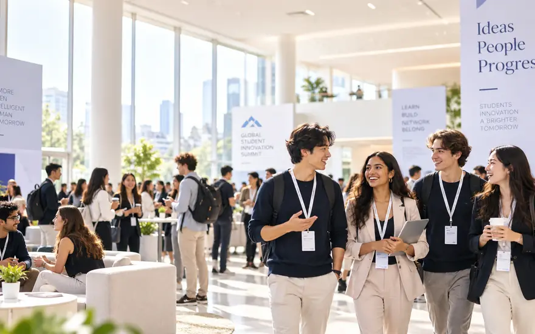
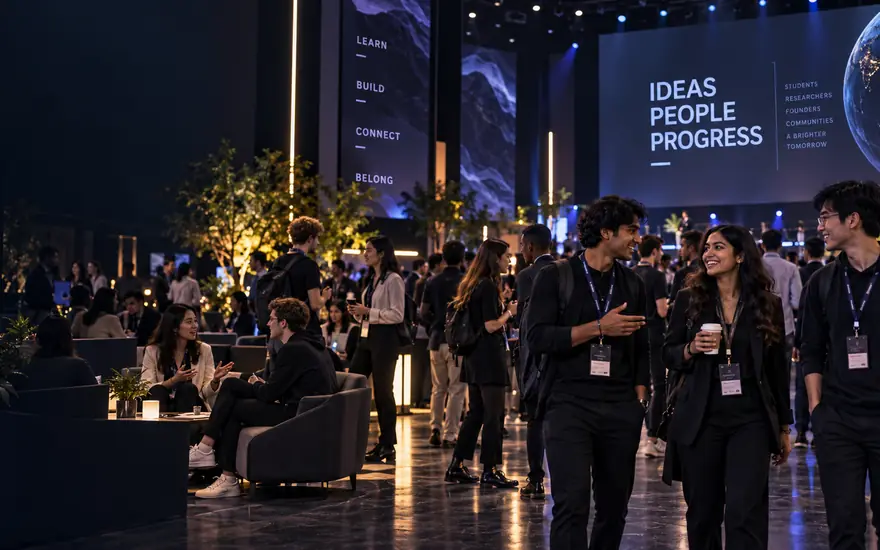
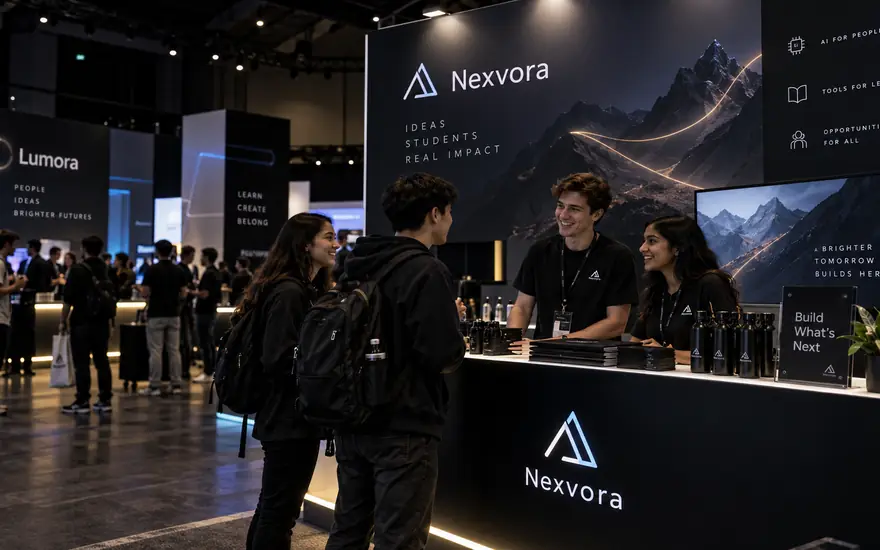
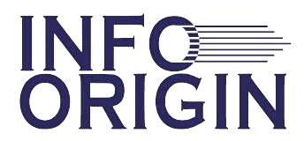

<title>Agentic AI Workshop 2026</title>
<meta name="claude:viewport-fit-sides" content="cover">
<link rel="preconnect" href="https://fonts.gstatic.com" crossorigin>
<link rel="stylesheet" href="https://fonts.googleapis.com/css2?family=Newsreader:ital,opsz,wght@0,6..72,400;0,6..72,500;0,6..72,600;1,6..72,400&family=IBM+Plex+Mono:wght@400;500&family=IBM+Plex+Sans:wght@400;500;600&display=swap">
<link rel="stylesheet" href="styles.css">
<script>try{var t=localStorage.getItem("aaiw-theme");if(t){document.documentElement.classList.add("t-"+t);}}catch(e){}</script>

<header class="site-head">
  <div class="wrap head-in">
    <a class="mark" href="index.html">
      
      
      <span class="mark-text">
        <b>Agentic AI Workshop <i>2026</i></b>
        <span>Indian Institute of Technology Delhi</span>
        <span>Yardi School of Artificial Intelligence</span>
      </span>
    </a>
    <nav class="nav" id="nav" aria-label="Pages">
      <a href="about.html">About</a>
      <a href="programme.html">Programme</a>
      <a href="speakers.html">Speakers</a>
      <a href="tutorials.html">Tutorials</a>
      <a href="venue.html">Venue</a>
      <a href="organisers.html">Organisers</a>
    </nav>
    <button class="theme-btn" id="themeBtn" type="button" aria-label="Switch between light and dark theme">
      <svg class="moon" viewBox="0 0 24 24" fill="none" stroke="currentColor" stroke-width="2" stroke-linecap="round" stroke-linejoin="round" aria-hidden="true"><path d="M21 12.8A9 9 0 1 1 11.2 3a7 7 0 0 0 9.8 9.8z"/></svg>
      <svg class="sun" viewBox="0 0 24 24" fill="none" stroke="currentColor" stroke-width="2" stroke-linecap="round" stroke-linejoin="round" aria-hidden="true"><circle cx="12" cy="12" r="4.2"/><path d="M12 2.5v2M12 19.5v2M4.2 4.2l1.4 1.4M18.4 18.4l1.4 1.4M2.5 12h2M19.5 12h2M4.2 19.8l1.4-1.4M18.4 5.6l1.4-1.4"/></svg>
    </button>
    <a class="btn btn-sm head-cta" href="register.html">Register</a>
    <button class="menu-btn" id="menuBtn" aria-expanded="false" aria-controls="nav">Menu</button>
  </div>
</header>

<main>
  <section class="hero">
    <div class="hero-bg" aria-hidden="true"></div>
    <div class="wrap hero-grid">
      <div>
        <h1>Agentic&nbsp;AI<br>Workshop <em>2026</em></h1>
        <p class="lede">An invite-only gathering of academia and industry, through expert talks, panel discussions, tutorials and live demonstrations.</p>
        <div class="hero-cta">
          <a class="btn" href="register.html">Register to attend</a>
          <a class="btn btn-ghost" href="programme.html">See the programme</a>
        </div>
      </div>
      <dl class="facts">
        <div class="fact"><dt>Dates</dt><dd><b>15&ndash;16 December 2026</b><br>Tuesday &amp; Wednesday, 09:00&ndash;21:30 IST</dd></div>
        <div class="fact"><dt>Venue</dt><dd>IIT Delhi, Hauz Khas, New Delhi 110016<br><span class="muted">Hall to be announced</span></dd></div>
        <div class="fact"><dt>Fee</dt><dd>Free to attend. Places are limited and confirmed by the organising committee.</dd></div>
        <div class="fact"><dt>Speakers</dt><dd>11 confirmed, from academia and industry</dd></div>
        <div class="fact"><dt>Format</dt><dd>Talks &middot; Panels &middot; Tutorials &middot; Demos &middot; Posters &middot; Kiosks</dd></div>
      </dl>
    </div>
    <p class="hero-credit">IIT Delhi, Hauz Khas</p>
  </section>

  <section class="band alt" id="take-part">
    <div class="wrap band-grid">
      <div class="band-head">
        <p class="eyebrow">Take part</p>
        <h2>Three ways in</h2>
        <p>Come and listen, bring your own research, or put what you are building in front of the room.</p>
      </div>
      <div>
        <div class="take-grid">
          <article class="take">
            <div class="take-art"></div>
            <div class="take-body">
              <h3>Attend</h3>
              <p>Talks, panels, tutorials and live demos across two days. Free, with places confirmed by the committee.</p>
              <a class="btn btn-go" href="https://forms.gle/HHtuspnAUSAGpwxS9" target="_blank" rel="noopener noreferrer">Register to attend</a>
            </div>
          </article>
          <article class="take">
            <div class="take-art"></div>
            <div class="take-body">
              <h3>Present a poster</h3>
              <p>arXiv preprints and papers under submission, on the broader theme of agentic AI.</p>
              <a class="btn btn-go" href="https://forms.gle/W6U7YbLqxAHPparc8" target="_blank" rel="noopener noreferrer">Submit a poster</a>
            </div>
          </article>
          <article class="take">
            <div class="take-art"></div>
            <div class="take-body">
              <h3>Exhibit or sponsor</h3>
              <p>A kiosk puts your products, prototypes and open roles in front of the room across both days.</p>
              <a class="btn btn-go" data-link="kiosk" href="partners.html">Request a kiosk</a>
            </div>
          </article>
        </div>
      </div>
    </div>
  </section>

  <section class="band sponsor-strip" id="sponsors">
    <div class="wrap sponsor-strip-in">
      <p class="sponsor-eyebrow"><i></i>Title sponsor<i></i></p>
      <div class="sponsor-card"></div>
      <p class="sponsor-note">Presented in partnership with <b>InfoOrigin</b> &middot; <a href="partners.html">Partners &amp; sponsors &rarr;</a></p>
    </div>
  </section>

  <section class="band">
    <div class="wrap band-grid">
      <div class="band-head">
        <p class="eyebrow">Speakers</p>
        <h2>Eleven, and counting</h2>
        <p>Eleven confirmed across universities, corporate research labs, hospitals and startups. More to come, and two panel discussions on the way.</p>
      </div>
      <div>
        <div class="spk-feature">
          <div class="orbit" id="orbit">
            <div class="ring">
              <div class="orb" style="--a:0.0deg"><button class="face" type="button" data-i="0" aria-current="true"><span class="face-inner"></span></button></div>
              <div class="orb" style="--a:32.73deg"><button class="face" type="button" data-i="1"><span class="face-inner"></span></button></div>
              <div class="orb" style="--a:65.45deg"><button class="face" type="button" data-i="2"><span class="face-inner"></span></button></div>
              <div class="orb" style="--a:98.18deg"><button class="face" type="button" data-i="3"><span class="face-inner"></span></button></div>
              <div class="orb" style="--a:130.91deg"><button class="face" type="button" data-i="4"><span class="face-inner"></span></button></div>
              <div class="orb" style="--a:163.64deg"><button class="face" type="button" data-i="5"><span class="face-inner"></span></button></div>
              <div class="orb" style="--a:196.36deg"><button class="face" type="button" data-i="6"><span class="face-inner"></span></button></div>
              <div class="orb" style="--a:229.09deg"><button class="face" type="button" data-i="7"><span class="face-inner"></span></button></div>
              <div class="orb" style="--a:261.82deg"><button class="face" type="button" data-i="8"><span class="face-inner"></span></button></div>
              <div class="orb" style="--a:294.55deg"><button class="face" type="button" data-i="9"><span class="face-inner"></span></button></div>
              <div class="orb" style="--a:327.27deg"><button class="face" type="button" data-i="10"><span class="face-inner"></span></button></div>
            </div>
            <div class="orbit-core" aria-hidden="true"><b>11</b><span>Speakers</span></div>
          </div>
          <div class="orbit-panel" aria-live="polite">
            <h3 id="orbName">Prof. Surya Ganguli</h3>
            <p class="role" id="orbRole">Associate Professor of Applied Physics</p>
            <p class="org" id="orbOrg">Stanford University</p>
            <div class="orbit-tags" id="orbTags"><span>Academia</span></div>
            <p class="orbit-hint">The ring moves through all eleven speakers. Hover or tap any portrait to hold it there.</p>
          </div>
        </div>
        <p class="note"><a href="speakers.html">Full profiles and the panel discussions &rarr;</a></p>
      </div>
    </div>
  </section>

  <section class="band" id="themes">
    <div class="wrap band-grid">
      <div class="band-head">
        <p class="eyebrow">Themes</p>
        <h2>Where agents earn their keep</h2>
        <p>What can agents actually do for us? Talks, tutorials and demos are organised around three answers.</p>
      </div>
      <div>
        <div class="rows">
          <article class="row-item"><div class="num">01</div><div>
            <h3>Agentic AI in Healthcare</h3>
            <p>Agents that support clinicians and patients: triaging, summarising records, coordinating care and accelerating diagnostics, built to be safe, fair and accountable.</p>
          </div></article>
          <article class="row-item"><div class="num">02</div><div>
            <h3>Agentic AI for Scientific Discovery</h3>
            <p>AI scientists that read the literature, generate hypotheses, design and run experiments and analyse results, closing the loop from idea to insight.</p>
          </div></article>
          <article class="row-item"><div class="num">03</div><div>
            <h3>Agentic AI and Enterprise</h3>
            <p>From prototype to product: building, funding and scaling agentic AI ventures, and the business models that agents make possible.</p>
          </div></article>
        </div>
        <p class="note"><a href="about.html">Read how the three themes shape the programme &rarr;</a></p>
      </div>
    </div>
  </section>

  <section class="band alt">
    <div class="wrap band-grid">
      <div class="band-head">
        <p class="eyebrow">What is an agentic system?</p>
        <h2>Plan, delegate, verify, repeat</h2>
        <p>Not one model answering a question. A pipeline of them, arguing with its own output until it holds up.</p>
      </div>
      <div>
        <div class="demo-bar">
          <span class="eyebrow">Illustrative run</span>
          <q>Which papers since 2024 report agents running wet-lab experiments?</q>
          <span class="run-state passed" id="demoState">passed</span>
          <button class="replay" id="demoReplay" type="button">Replay</button>
        </div>
        <ol class="orch-stack" aria-hidden="true">
          <li id="m-orch"><span class="st-dot"></span><span class="st-text"><b>Orchestrator</b><small>plan &middot; route &middot; retry</small></span></li>
          <li id="m-ret"><span class="st-dot"></span><span class="st-text"><b>Retriever</b><small>search &middot; rank</small></span></li>
          <li id="m-rea"><span class="st-dot"></span><span class="st-text"><b>Reasoner</b><small>decompose &middot; draft</small></span></li>
          <li id="m-ver"><span class="st-dot"></span><span class="st-text"><b>Verifier</b><small>check &middot; cite</small></span></li>
          <li id="m-ans"><span class="st-dot"></span><span class="st-text"><b>Answer</b><small>with its trace</small></span></li>
        </ol>
        <div class="orch-wrap">
            <svg class="orch" viewBox="0 0 680 460" role="img" aria-label="A loop: a goal enters the orchestrator, which sends work round retriever, reasoner and verifier. A verifier that passes releases the answer; one that fails sends the work back to the orchestrator for another lap.">
              <defs><marker id="ah" viewBox="0 0 10 10" refX="8.6" refY="5" markerWidth="9" markerHeight="9" orient="auto-start-reverse"><path d="M0.5 0.8 L9.6 5 L0.5 9.2 Z" class="tick"/></marker><marker id="ah-on" viewBox="0 0 10 10" refX="8.6" refY="5" markerWidth="5" markerHeight="5" orient="auto-start-reverse"><path d="M0.5 0.8 L9.6 5 L0.5 9.2 Z" class="tick-on"/></marker><marker id="ah-warn" viewBox="0 0 10 10" refX="8.6" refY="5" markerWidth="5" markerHeight="5" orient="auto-start-reverse"><path d="M0.5 0.8 L9.6 5 L0.5 9.2 Z" class="tick-warn"/></marker></defs>
              <path class="wire dot" d="M340 92 V 154"/>
              <path class="wire dot" d="M300 216 V 258 H 215 V 300"/>
              <path class="wire dot" d="M380 216 V 272 H 420 V 300"/>
              <path class="wire dot" d="M80 221 V 394"/>
              <path class="wire dot" d="M215 364 V 394"/>
              <path class="wire dot" d="M500 364 V 394"/>
              <path class="wire" d="M150 42 H 258" marker-end="url(#ah)"/>
              <path class="flow" id="f-goal" d="M150 42 H 258" marker-end="url(#ah-on)"/>
              <path class="wire" d="M300 92 V 128 H 118 V 152" marker-end="url(#ah)"/>
              <path class="flow" id="f-o2r" d="M300 92 V 128 H 118 V 152" marker-end="url(#ah-on)"/>
              <path class="wire" d="M118 221 V 272 H 215 V 298" marker-end="url(#ah)"/>
              <path class="flow" id="f-r2rea" d="M118 221 V 272 H 215 V 298" marker-end="url(#ah-on)"/>
              <path class="wire" d="M291 334 H 379" marker-end="url(#ah)"/>
              <path class="flow" id="f-rea2v" d="M291 334 H 379" marker-end="url(#ah-on)"/>
              <path class="wire" d="M538 334 H 568 V 227" marker-end="url(#ah)"/>
              <path class="flow" id="f-v2a" d="M538 334 H 568 V 227" marker-end="url(#ah-on)"/>
              <path class="wire" d="M462 304 V 62 H 422" marker-end="url(#ah)"/>
              <path class="flow warn" id="f-revise" d="M462 304 V 62 H 422" marker-end="url(#ah-warn)"/>
              <rect class="box ghost" id="n-goal" x="20" y="20" width="130" height="44" rx="3"/>
              <text class="t" x="85" y="41" text-anchor="middle">Goal</text>
              <text class="sub" x="85" y="57" text-anchor="middle">from a person</text>
              <rect class="box" id="n-orch" x="265" y="32" width="150" height="60" rx="3"/>
              <text class="t" x="340" y="61" text-anchor="middle">Orchestrator</text>
              <text class="sub" x="340" y="77" text-anchor="middle">plan &#183; route</text>
              <rect class="box ghost" id="n-mem" x="270" y="156" width="140" height="60" rx="3"/>
              <text class="t" x="340" y="185" text-anchor="middle">Shared memory</text>
              <text class="sub" x="340" y="201" text-anchor="middle">state &#183; traces</text>
              <rect class="box" id="n-ret" x="43" y="155" width="150" height="62" rx="3"/>
              <text class="t" x="118" y="185" text-anchor="middle">Retriever</text>
              <text class="sub" x="118" y="201" text-anchor="middle">search &#183; rank</text>
              <rect class="box" id="n-rea" x="139" y="304" width="152" height="60" rx="3"/>
              <text class="t" x="215" y="333" text-anchor="middle">Reasoner</text>
              <text class="sub" x="215" y="349" text-anchor="middle">draft &#183; revise</text>
              <rect class="box" id="n-ver" x="386" y="304" width="152" height="60" rx="3"/>
              <text class="t" x="462" y="333" text-anchor="middle">Verifier</text>
              <text class="sub" x="462" y="349" text-anchor="middle">check &#183; cite</text>
              <rect class="box" id="n-ans" x="498" y="162" width="140" height="60" rx="3"/>
              <text class="t" x="568" y="191" text-anchor="middle">Answer</text>
              <text class="sub" x="568" y="207" text-anchor="middle">with its trace</text>
              <rect class="box ghost" x="40" y="394" width="600" height="38" rx="3"/>
              <text class="sub" x="340" y="418" text-anchor="middle">Tools &#183; web search &#183; databases &#183; code sandbox &#183; internal APIs</text>
              <text class="cap" x="474" y="140">fails &#8594; retry</text>
            </svg>
        </div>
        <div class="demo-foot">
          <ol class="demo-log" id="demoLog">
            <li><b>orchestrator</b><span>no source exists, so instruct drop</span></li>
            <li><b>reasoner</b><span>drops the unsupported claim</span></li>
            <li class="good"><b>verifier</b><span>all 19 claims match their source</span></li>
            <li class="good"><b>orchestrator</b><span>returns answer, citations and trace</span></li>
          </ol>
          <div class="demo-stats">
            <div><span class="k">Attempt</span><b id="stAttempt">3 of 3</b></div>
            <div><span class="k">Tool calls</span><b id="stCalls">10</b></div>
            <div><span class="k">Tokens</span><b id="stTokens">48.5k</b></div>
            <div><span class="k">Est. cost</span><b id="stCost">$0.32</b></div>
            <div><span class="k">Wall clock</span><b id="stTime">46.5s</b></div>
          </div>
        </div>
        <p class="demo-note">Two failed attempts, one success. Figures are illustrative, at roughly today's frontier-model rates. The retries are the cost, and the verifier is what you are buying.</p>
        <div class="prose" style="margin-top:30px">
          <p>A goal arrives and an <strong>orchestrator</strong> decides what the work actually is: which steps are needed, which specialist handles each one, what to do when one of them fails. Retrieval, reasoning and verification run as separate agents with separate prompts, separate tools and separate failure modes, writing to a <strong>shared memory</strong> the next step can read.</p>
          <p>The interesting edge is the return path. A verifier that rejects a draft sends it back with reasons, and the orchestrator re-plans rather than re-rolls. That is what separates an agentic pipeline from a long prompt: it can notice it was wrong and spend more compute instead of shipping the first plausible answer.</p>
          <p>It is also where the hard problems live. Every extra hop multiplies the ways a run can drift, tool calls have real consequences, and a trace nobody can audit is not a system anyone should deploy in a hospital or a lab. Reliability, evaluation and human oversight run through the whole programme.</p>
          <p class="note"><a href="about.html#run-trace">Read the full step-by-step trace of this run &rarr;</a></p>
        </div>
      </div>
    </div>
  </section>

  <section class="band alt">
    <div class="wrap band-grid">
      <div class="band-head">
        <p class="eyebrow">Registration</p>
        <h2>Save your seat</h2>
        <p>Free, and it takes about two minutes. Every registration is reviewed by the organising committee.</p>
      </div>
      <div>
        <div class="reg-box">
          <div>
            <h3>Workshop registration</h3>
            <p>Free &middot; limited places &middot; open until seats are filled</p>
          </div>
          <a class="btn" href="register.html">How registration works</a>
        </div>
        <p class="note">Submitting the form sends you a copy of your responses straight away; the committee confirms your place by e-mail afterwards.</p>
      </div>
    </div>
  </section>

  <section class="band" id="faq">
    <div class="wrap band-grid">
      <div class="band-head">
        <h2>FAQs</h2>
      </div>
      <div>
        <div class="faq">
          <details open><summary>Who can attend?</summary><p>Researchers, faculty, students, industry practitioners, startups and investors working on or around agentic AI. Places are limited, so every registration is reviewed and confirmed by the organising committee.</p></details>
          <details><summary>Is there a registration fee?</summary><p>No. Attendance is free. If any fees are introduced for particular categories, they will be announced on the <a href="register.html">registration page</a>.</p></details>
          <details><summary>Will I know my registration went through?</summary><p>Yes. Submitting the form sends you a copy of your responses immediately, and a separate e-mail from the committee confirms whether a place is available.</p></details>
          <details><summary>Can I present my work?</summary><p>The poster session is open to arXiv preprints and papers under submission on the broader theme of agentic AI. Answer &ldquo;Yes&rdquo; to the poster question when you register.</p></details>
          <details><summary>What should I bring to the tutorials?</summary><p>A laptop for most of them. Software and account prerequisites are published with each session once the <a href="tutorials.html">line-up</a> is final.</p></details>
          <details><summary>How do I get to campus?</summary><p>IIT Delhi is in Hauz Khas, South Delhi, about 15&nbsp;km from the airport and a short ride from the IIT and Hauz Khas metro stations. See <a href="venue.html">venue and travel</a>.</p></details>
        </div>
        <p class="note">More on fees, deadlines and accommodation in the <a href="register.html#faq">full FAQ</a>.</p>
      </div>
    </div>
  </section>
</main>

<footer class="foot">
  <div class="wrap">
    <div class="foot-grid">
      <div>
        
        
        <div class="brand">Agentic AI Workshop 2026</div>
        <p>Bringing together academia and industry through expert talks, panel discussions, tutorials, live demonstrations and a poster session.</p>
        <p class="mono" style="margin-top:16px;font-size:13px">15&ndash;16 December 2026<br>IIT Delhi, Hauz Khas, New Delhi</p>
      </div>
      <div>
        <h4>Programme</h4>
        <ul>
          <li><a href="about.html">About</a></li>
          <li><a href="programme.html">Schedule</a></li>
          <li><a href="speakers.html">Speakers</a></li>
          <li><a href="tutorials.html">Tutorials &amp; demos</a></li>
        </ul>
      </div>
      <div>
        <h4>Visiting</h4>
        <ul>
          <li><a href="venue.html">Venue &amp; travel</a></li>
          <li><a href="venue.html#stay">Where to stay</a></li>
          <li><a href="register.html">Registration</a></li>
          <li><a href="organisers.html">Organisers</a></li>
        </ul>
      </div>
      <div>
        <h4>Get involved</h4>
        <ul>
          <li><a href="register.html">Register to attend</a></li>
          <li><a href="register.html#posters">Present a poster</a></li>
          <li><a href="partners.html">Partners &amp; sponsors</a></li>
        </ul>
      </div>
    </div>
    <div class="colophon">
      <span>&copy; 2026 IIT Delhi &middot; Yardi School of Artificial Intelligence</span>
      <span>Enquiries: <span class="tba" data-contact>e-mail address to be announced</span></span>
    </div>
  </div>
</footer>
<script src="config.js"></script>
<script src="site.js"></script>
